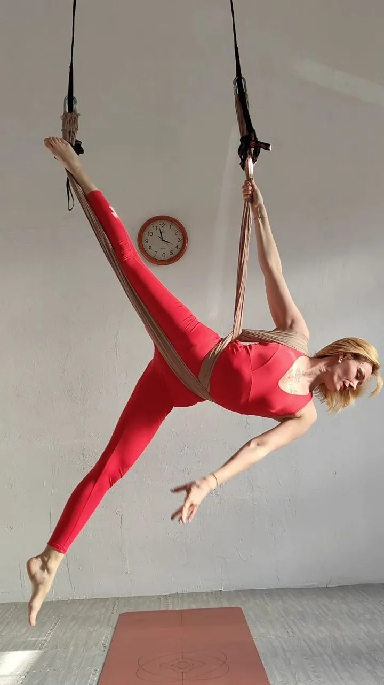

Fly Yoga a Trieste: lo Yoga in Volo sull'Amaca
Cos'è il fly yoga e perché a Trieste lo amano
Sono Anna, e il fly yoga Trieste è la pratica a cui ho dedicato il mio studio. Lo chiamano anche yoga aereo o yoga in amaca: in poche parole, è uno yoga che si fa appesi a un telo morbido fissato al soffitto. Non è un esercizio acrobatico per pochi — è yoga vero, con le sue asana, ma con un alleato in più che cambia tutto: l'amaca.
Nel mio studio, l'unico a Trieste interamente dedicato a questa disciplina, l'amaca è in tessuto resistente, certificata per reggere il peso del corpo in tutta sicurezza. La uso come un sostegno: tiene parte del tuo peso, ti accompagna nelle inversioni e rende possibili posizioni che a terra richiederebbero molta più forza o anni di pratica. Chi prova lo yoga aereo per la prima volta di solito si stupisce di quanto sia accessibile.
Cosa cambia rispetto allo yoga a terra
La differenza vera è una sola, ma pesa: la decompressione. Quando pratichi lo yoga classico a terra, la gravità preme sempre sulla colonna. Con l'amaca, invece, in molte posizioni la schiena si allunga liberamente — soprattutto nelle inversioni, quando ti lasci andare a testa in giù e senti lo spazio aprirsi tra le vertebre. Per chi passa la giornata seduto o convive con un mal di schiena leggero, è una sensazione di sollievo che si sente già dalla prima lezione.
Com'è fatta una lezione
Ogni lezione dura 60 minuti e segue un ritmo pensato per accompagnarti, non per metterti alla prova:
- Riscaldamento con l'amaca: partiamo piano, sciogliendo articolazioni e respiro, per prendere confidenza con il telo prima di salirci davvero.
- Parte attiva: sequenze fluide che lavorano su core, braccia e gambe. Si fatica il giusto, e il corpo si tonifica in modo equilibrato, senza strappi.
- Inversioni: il momento che tutti aspettano. A testa in giù il cuore si riposa, la circolazione cambia marcia e la testa, semplicemente, si svuota.
- Rilassamento finale in amaca: ti avvolgo nel telo come in un bozzolo, sospesa da terra, con il suono delle campane tibetane. È il momento che la maggior parte delle persone non vuole più lasciare — un riposo difficile da trovare altrove.
I benefici che vedrai davvero
- Schiena più libera: la decompressione in sospensione è un sollievo concreto per chi soffre di tensioni a schiena e cervicale o sta troppo seduto.
- Forza e flessibilità insieme: lavori in profondità sul core e guadagni elasticità, senza caricare le articolazioni.
- Postura ed equilibrio: stabilizzarti sull'amaca ti insegna, lezione dopo lezione, a stare più dritta e a sentire meglio il tuo corpo.
- Effetto drenante: le inversioni attivano circolazione e sistema linfatico — molte allieve notano un viso più fresco già dopo poche lezioni.
- Mente che si scioglie: il dondolio e il lasciarsi andare abbassano davvero ansia e stress. Non è una promessa da brochure: è quello che mi sentono dire più spesso a fine lezione.
Se cerchi uno yoga a Trieste che unisca un po' di sfida fisica, sicurezza e un relax profondo, il fly yoga è il posto giusto da cui iniziare. Per molti è molto più di un allenamento: è un'ora in cui ci si toglie peso di dosso — anche in senso letterale.

Domande Frequenti sul Fly Yoga a Trieste
Il Fly Yoga Trieste combina yoga tradizionale, pilates e danza aerea tramite un'amaca speciale in tessuto resistente. Le posizioni vengono eseguite in sospensione, permettendo decompressione vertebrale, inversioni terapeutiche e rilassamento profondo. Siamo l'unico centro specializzato a Trieste.
Sì, il Fly Yoga è particolarmente indicato per mal di schiena e cervicale. Le inversioni in sospensione decomprimono la colonna vertebrale, creando spazio tra le vertebre e idratando i dischi intervertebrali. Il corpo non subisce la pressione della gravità. Informa sempre l'insegnante della tua condizione.
Già dalla prima lezione si ottengono benefici concreti. Per acquisire autonomia nelle posizioni base servono circa 8–10 lezioni. Chi viene 2–3 volte a settimana avanza rapidamente. I nostri corsi di gruppo a Trieste si adattano a qualsiasi ritmo e livello.
Il Fly Yoga Trieste offre benefici esclusivi: decompressione vertebrale immediata, miglioramento della postura, tonificazione del core, effetto linfodrenante dalle inversioni, riduzione dello stress. L'amaca facilita le inversioni rendendole accessibili a tutti e moltiplicando i benefici terapeutici.
Indossa abbigliamento sportivo comodo che copra le caviglie e i polsi — evita il contatto diretto della pelle con l'amaca. Non è necessario portare nulla: l'amaca e il materassino sono forniti dal nostro studio.
Certo: la prima lezione di prova in gruppo è gratuita, pensata proprio per chi è curioso e parte da zero. Nessuna esperienza richiesta — scrivici su WhatsApp per prenotare.
Vuoi saperne di più?
Approfondisci sul blog: